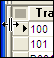

Using a Browse
Table of Contents
- Opening a Browse
- Opening the Default Browse
- Changing the Browse Appearance
- Resizing Columns and Rows
- Rearranging Columns
- Splitting a Browse
- Navigating Within a Browse
- Entering and Changing Data in a Browse
- Undoing and Cancelling Changes
- Saving Records
- Deleting and Un-deleting Records
- Cutting, Copying, and Pasting Records and Fields
- Copying a Record to the Clipboard
- Pasting a Record from the Clipboard
- Copy Previous Record and Copy Previous Field
- Other Common User Functions
When viewing records in a browse, you can navigate from record to record and from field to field, resize rows and columns, re-arrange columns, split the browse, set record ordering within the browse, or open a different Browse.
Click the Browses tab in the Control Panel, and double-click a browse to open it.
The Default Browse displays a browse containing all the information from a table.
To open the Default Browse from the Control Panel :
Click the Tables/Sets tab in the Control Panel.
Right-click a table and select Open Default Browse from the menu.
To open the Default Browse while viewing a
form, click the Browse View button  on the toolbar or press F8.
on the toolbar or press F8.
Changing the Browse Appearance
While viewing records in a browse, you can resize rows and columns, re-arrange columns, split the browse to view as many as four different areas in the same window, and show only parent records from a set.
 Note : Appearance modifications
remain in the browse only as long as the browse is
open; once you close the browse or change to form view, the settings are
reset to their default values.
Note : Appearance modifications
remain in the browse only as long as the browse is
open; once you close the browse or change to form view, the settings are
reset to their default values.
You resize rows and columns in a browse by dragging the horizontal or vertical sizing handles. The sizing handles appear when the mouse hovers over the top or left border of the browse. When the pointer becomes a horizontal or vertical sizing handle, you can drag the column or row border to a desired size.

Vertical Sizing Handle
Horizontal Sizing Handle
If you want to resize a column that fills the entire window, click the column's title and press CTRL LEFT. Move left or right until the column divider is in the desired position.
To rearrange browse columns:
Click the title of the column you want to move, which selects the entire column.
Click and hold in the title of the column again and the Column Reordering Bar appears.
Drag the column to a new position, and release.

The Column Reordering Bar
Splitting a browse lets you view the multiple copies of the same browse in the same window, side-by-side. This can be helpful when a browse is wider than the screen, or when you want to work in different areas of the browse simultaneously. You can split a browse up to three times for a total of four sections.

Browse Splitting Handle
To split a Browse:
Move the mouse over the left edge of the browse window.
When the Browse Splitting Handle appears, click and drag the splitting bar to the right, to where you want to divide the Browse.
Repeat the process to split the browse up to three times.

A Split Browse
You can navigate within a browse using the keyboard and mouse. Scroll through records horizontally and vertically to display additional records and fields. The Browse View toolbar at the top of the browse has navigation buttons for switching records, and a record selector to go directly to a specified record number.
Browse View Toolbar
The table below explains each navigation button:
|
Button |
Action |
|
|
Move to the first record in the table. |
|
|
Move back one record. To scroll backward, click and hold. |
|
|
Move forward one record. To scroll forward, click and hold. |
|
|
Move to the last record in the table. |
To move the cursor from field-to-field or object-to-object within a Browse, either click in the field to activate it, or use the following keyboard commands:
|
Keystroke |
Action |
|
UP ARROW |
Move to the previous record |
|
DOWN ARROW |
Move to the next record |
|
LEFT ARROW |
Move left one field |
|
RIGHT ARROW |
Move right one field |
|
F8 |
Switch between form and browse mode |
|
PAGE UP |
Move up one screen of records |
|
PAGE DOWN |
Move down one screen of records |
|
HOME or CTRL LEFT |
Move to the first field in the current record |
|
END or CTRL RIGHT |
Move to the last field in the current record |
|
ENTER |
Move to the next field |
|
TAB |
Move to the next field |
|
CTRL HOME |
Move to the first record in the table |
|
CTRL END |
Move to the last record in the table |

Record Selector
You can also use the Record Selector to quickly navigate to a particular record. Type a record number in the Record Selector field and press ENTER.
Entering and Changing Data in a Browse
To enter or change the value in any field:
Place the cursor in the field and start typing. If the current field value is highlighted, it will be replaced. Otherwise, the typed text is inserted at the cursor location.
Double-click on the field or press F2 to create an insertion point.
If you are unable to enter or change data, make sure Browse > Allow Edits is checked. Allow Edits enables and disables data entry, and can be used as a safety switch to prevent overwriting field values.
To add a new record, you need to open a blank record. Do any of the following to open a blank record:
- Click
the New Record button
 on
the toolbar.
on
the toolbar.
- Select Records > Enter New Record.
- Use the keystroke:CTRL E.
- Navigate to the last record in the table and press Enter.
Once your new, blank record appears, you may begin entering data into the record. The new record is added to the end of the table.
You can use the Find and Replace dialog box to find a text value in a record, by searching in just the current record, or in multiple Alpha Anywhere records, and replace the found text with different text.
- To use Find and Replace when viewing a form or browse, select Edit > Find and Replace.
- Display the Replace tab if you want to replace text.
- Enter the text to find in Find What.
- Optionally, enter the text to replace in Replace With.
- Optionally, limit the search by selecting "Current Record" or "Current Field" in the Where to Search group. Optionally, refine how you are searching by checking the Match Case check box.
- You can further refine your search by selecting "Whole Words" or "Beginning of Field" in the What to Match group.
- Select "Backward" in the Direction list to search backwards.
- Click Find Next to move the cursor to the next occurrence.
- Click Replace if you want to replace a single occurrence. The cursor moves automatically to the next occurrence.
- Click Replace All if you want to replace all occurrences.
- Click Cancel to exit.
You can confirm each replacement before it is made.
Undoing and Cancelling Changes
The undo command lets you reverse the most recent changes made to a field.
Use any of the following to undo recent changes:
- Click
the Cancel Changes button
 on
the toolbar.
on
the toolbar.
- Click Edit > Undo.
- Press ESCAPE.
You can only undo changes to a field while the cursor is still in that field. Once you leave (navigate away from) the field, changes are saved and undo won't work. Also, you can only undo changes to a field while the cursor remains in the field. Once you move to a different field, the Undo operation won't work.
However, as long as you are still viewing the same record, clicking the Cancel Changes button (or ESCAPE ) will undo all changes to the record.
Any changes made to a record (including entering a new record) are saved when you leave the record. For example, if you change a field value and press the Next button, Alpha Anywhere saves the changes you made to the previous record.
To save changes while viewing a record, click the
Save Record button  on the
toolbar or press F9.
on the
toolbar or press F9.
Deleting and Undeleting Records
To delete records from a form or a browse:
- If in a browse, select the records by dragging the Row Selector on the left edge of the screen.
- Press CTRL D or select Edit > Delete.
 Note
: After a Pack operation, records
cannot be recovered.
Note
: After a Pack operation, records
cannot be recovered.
You can un-delete records in a table or set, if the table or set has not yet been packed. Right-click on the table or set and select the Utilities > Undelete Records... .
Cutting, Copying, and Pasting Records and Fields
You can perform cut and paste operations on records in a Browse, and also use cut and paste to transfer data from Alpha Anywhere into other Windows applications (like Word or Excel ). Likewise, you can perform cut and paste operations in other Windows applications to transfer data into an Alpha Anywhere Browse.
Selecting Records
To use the Cut and Paste commands:
- Select records in a browse by dragging across the Row Selector on the left side of the browse window.
- Click
the Cut
 or Copy
button on the toolbar.
or Copy
button on the toolbar.
- Select
the area in which you want to place the information, and click the Paste
 button on the toolbar.
button on the toolbar.
Copying a Record to the Clipboard
The Edit > Copy Record to Clipboard command lets you paste the record on the clipboard into the current record, or as a new record. The clipboard can contain multiple entries.
Pasting a Record from the Clipboard
The Edit > Paste as New Record creates a new record from the last copied record.
The Edit > Paste to Current Record overwrites the current record with the last copied record.
The Edit > Paste Special command lets you paste any one of the multiple entries on the clipboard. In the dialog shown, there are three entries on the clipboard.
As you select each entry with your cursor, the dialog box shows the fields of the record in the Fields list. Select any field in the Fields list and the dialog shows you its type, width, and decimal places.
- Select an entry from the clipboard.
- Select one of the Paste Options :
"Paste into current record" or "Paste as New record"
"Paste all fields" or "Paste selected fields"
- If
you selected "Paste selected fields", click
 to
display the Select Fields dialog box.
to
display the Select Fields dialog box.
Place check marks next to each field that you want to paste.
Click OK to return to the Record Clipboard.
- Click OK to paste or Cancel to quit.
Copy Previous Record and Copy Previous Field
When the cursor is on a field in a new record, the Edit > Copy Previous Field command copies the value for the corresponding field in the last viewed record. For repetitive data entry, this action is handy when there are duplicate fields. For example, entering records for multiple people at the same company, might involve the same address repeatedly. This command lets the user easily copy the information.
When the cursor is on any field in a new record, the Edit > Copy Previous Record command copies and pastes all the fields from the last viewed record.
Speed Typing is a shortcut for entering frequently used values.
Shortcut Keys allow access to menu commands with a single keystroke.
Find and Replace a text value in a record or in multiple Alpha Anywhere records.
Duplicating a Record is useful when you have repetitive data.
You can print or email records from within form or browse view.
The Print Layout Genie lets you print, preview, email, or save to a file all the records in the current table or set, using any of the layouts that have been defined for that table or set.
The Print Genie lets you select and order, and then print, preview, email, or save to a file records from the current table or set, using any of the layouts that have been defined for that table or set.
If you deleted records in error, this is how to Undelete Records.
Alpha Anywhere writes out an ASCII file which is an Audit Trail of all changes made to a record. The audit trail shows the date and time of the change, the original value in the field, and the new value in the field.
The Alpha Anywhere Spell Checker lets you check the current record, the current selection of records, or the current field.
The Field Statistics window displays several different statistics for a field, such as total, average, minimum and maximum.
The Follow Changes and Enters function repositions the record pointer when you change or add a key value in the current index.
Alpha Anywhere provides a variety of tools for finding, selecting, and ordering records. You can perform powerful and complex searches to group your data into lists that match your specific criteria.
The Query Genie lets you create powerful search and sort operations by navigating through easy-to-understand dialog boxes. It is perhaps the easiest way for an inexperienced user to define complex searches of their database.
The Query by Expression dialog box is available when viewing both forms and browses, and lets you filter and sort records by directly entering filter and order expressions.
Multi-Select Queries provides a technique for building queries that select a set of records by record number.
The Select Filter dialog box lets quickly perform one of several pre-defined queries.
The Navigator is a dialog box that displays all the fields on a form or browse in a tree control. With the Navigator you can instantly navigate to any field on the form or browse.
The Quick Export to Excel command exports the current selection of records in the current form or browse to Excel and opens Excel with the records loaded into a new worksheet.
See Also